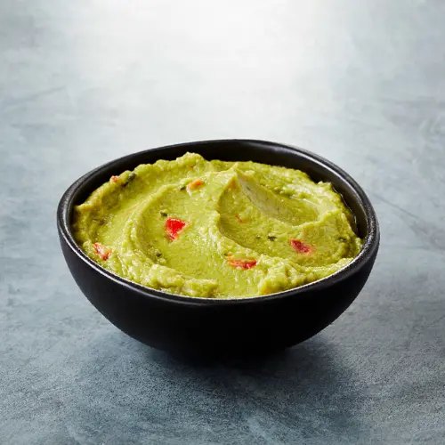

Guacamole

Description
This guacamole recipe gets a tasty kick from cayenne and cilantro. You can serve it smooth or chunky depending on your tastes. Serve with homemade tortilla chips.
Ingredients
- 3 avocados: peeled, pitted, and mashed.
- 1 lime: juiced.
- 1 teaspoon of salt.
- 2 tomatoes: diced.
- 1/2 cup onion: diced
- 1 teaspoon garlic: minced.
- 1 pinch cayenne pepper: ground (Optional).
Steps:
- Mash avocados, lime juice, and salt together in a medium bowl.
- Mix in tomatoes, onion, cilantro, and garlic.
- Stir in cayenne pepper (Optional).
- Serve immediately, or cover and refrigerate for 1 hour for improved flavor.